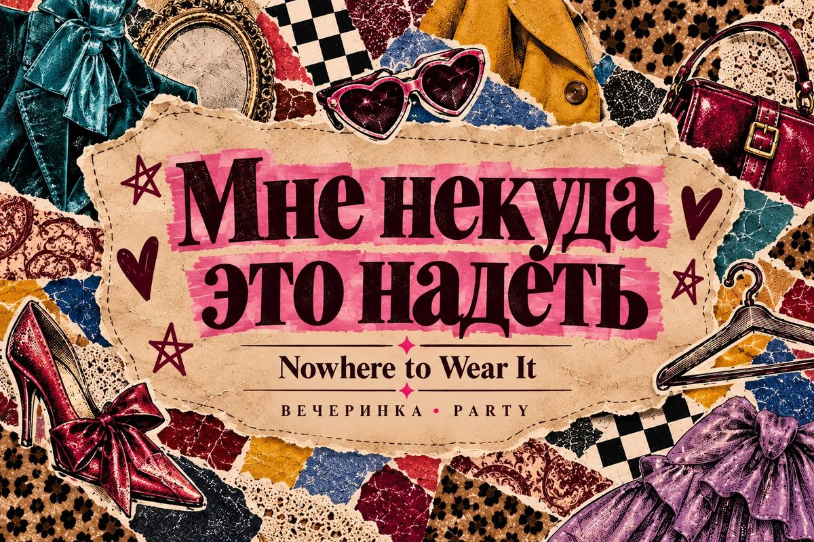
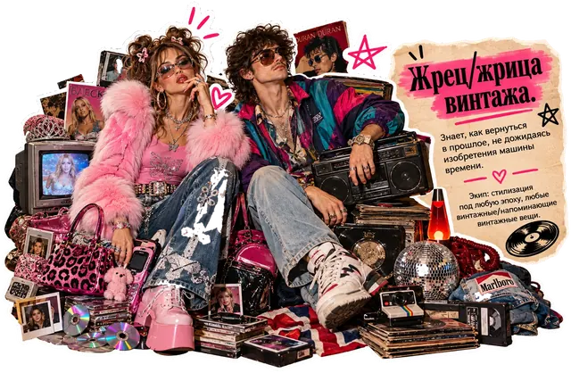
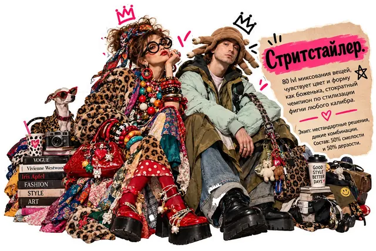
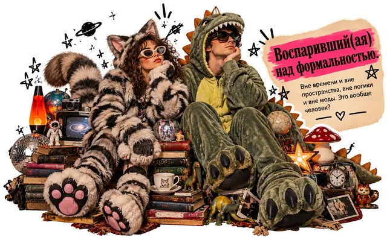

Мне некуда это надеть

Дресс-код
Всё, что обычно некуда надеть. Слишком нарядное, слишком странное слишком смелое для повседневности.
Покупать ничего не нужно: вся идея в том, чтобы выгулять то, что пылится, или составить необычный образ из того, что уже есть.
Нет наряда или не хочется его придумывать? Приходите в чём удобно, главное — повеселиться и отдохнуть.

Что будет
Настолки. Каждая победа приносит одну шмотковалюту.
Мини-маркет. Обмен вещей на шмотковалюту.
Ужин. С меня куриные грудки в песто с рисом и овощи, а на десерт запечённые груши со сладким сырным соусом.

Что можно принести
(не обязательно, по желанию)
- снеки и напитки на свой вкус
- что-нибудь небольшое на мини-маркет из того, что лежит без дела
- настолки
- гирлянды и огоньки
- что-то тёплое: вечером может быть прохладно

Если пойдёт дождь, переберёмся в дом, а там места меньше, поэтому обязательно напишите мне в личку, если придёте.

Чат вечеринки
Напишите сюда, если опаздываете или запутались по дороге. Сюда же скидывайте фото с вечера.
Открыть чат в Telegram